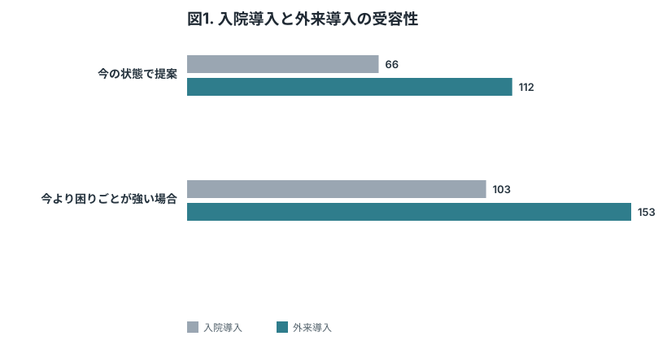
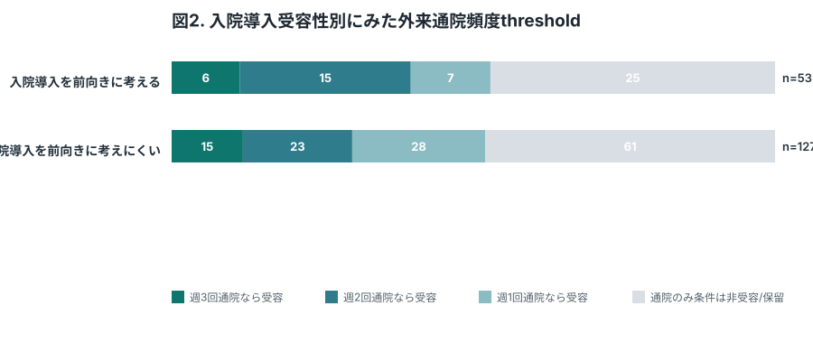
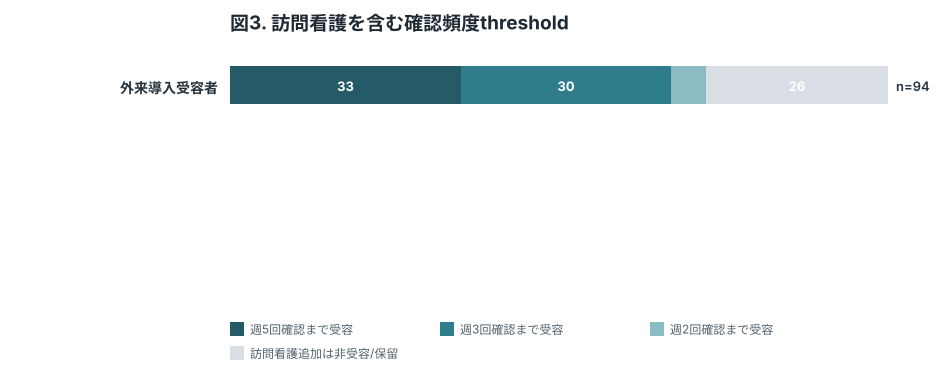
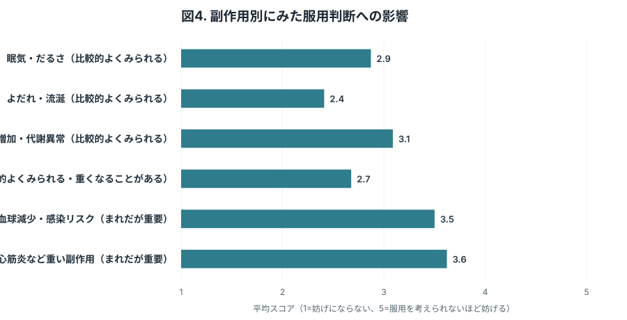
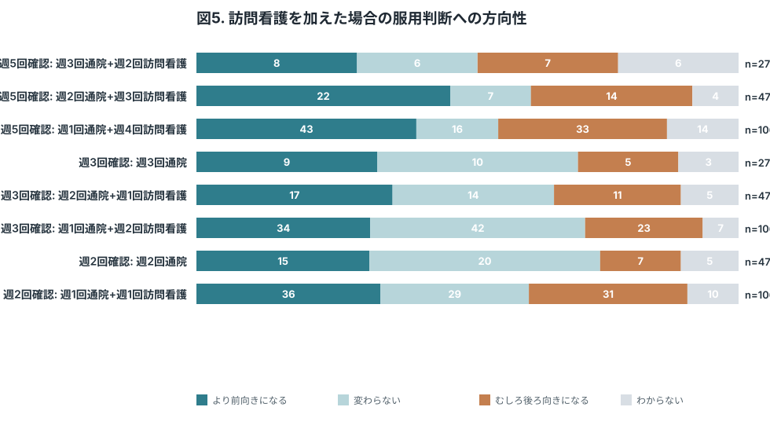
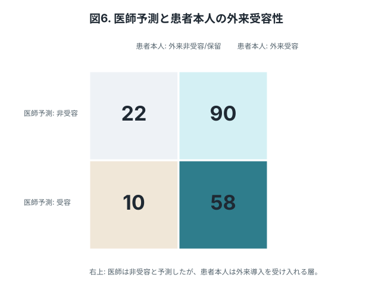

この版の考え方
科学的価値、方法論的妥当性、回答しやすさのバランスを取った現時点の推奨版。
- 主要アウトカムを“入院非受容/外来受容”と“外来導入burden threshold”に固定。
- 安全性検証研究の説明希望は最後に置き、わからないを許容。
- 医師判断との接続図表を加え、臨床家調査と患者調査を別論文でも接続できる構成にした。
Table 1. 回答者背景
| 項目 | 値 |
|---|---|
| 解析対象者 | 180 |
| TRS適格候補 | 86 (47.8%) |
| 広い未使用外来患者 | 94 (52.2%) |
| 現在の治療で残る困りごとあり | 104 (57.8%) |
| 主観的困りごと/つらさあり | 85 (47.2%) |
患者本人の受容性を解釈するため、対象集団、現在の困りごと、主観的つらさを最小限の背景情報として置く。

Parikh 2023のように、有効性・重大安全性を固定したうえで投与/導入方法の直接選好を先に示す。ここでは、当局向けに重要な「入院なら難しいが外来なら前向き」というニーズを可視化する。

Hauber & Coulter 2020のThreshold Techniqueに対応する中核図。個人ごとの受容閾値を分布として示し、外来導入レジメンの負担をどこまで下げる必要があるかを示す。

対象集団をTRS適格候補と広い未使用外来患者に分けることで、来年度安全性検証研究の潜在対象者と、一般的な潜在ニーズを分けて議論できる。

Barrett 2005が扱ったように、治療選好には副作用だけでなく通院・生活調整などの実務負担が効く。DCEではなくBHTMにしても、最大負担を1項目だけ取ることで患者負担を抑えつつ改善点を拾う。

安全性検証研究のリクルート可能性を、選好調査の最後に低圧で確認する。'わからない'を許容し、強い同意取得ではなく説明希望として扱う。

患者調査を臨床家調査と接続する図。Jakobsen 2025の示唆に沿い、医師が非受容と想定する患者の中にも外来導入なら受け入れる層がいるかを示す。